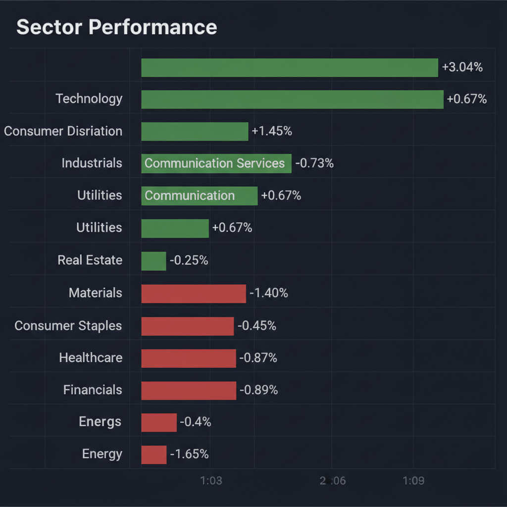
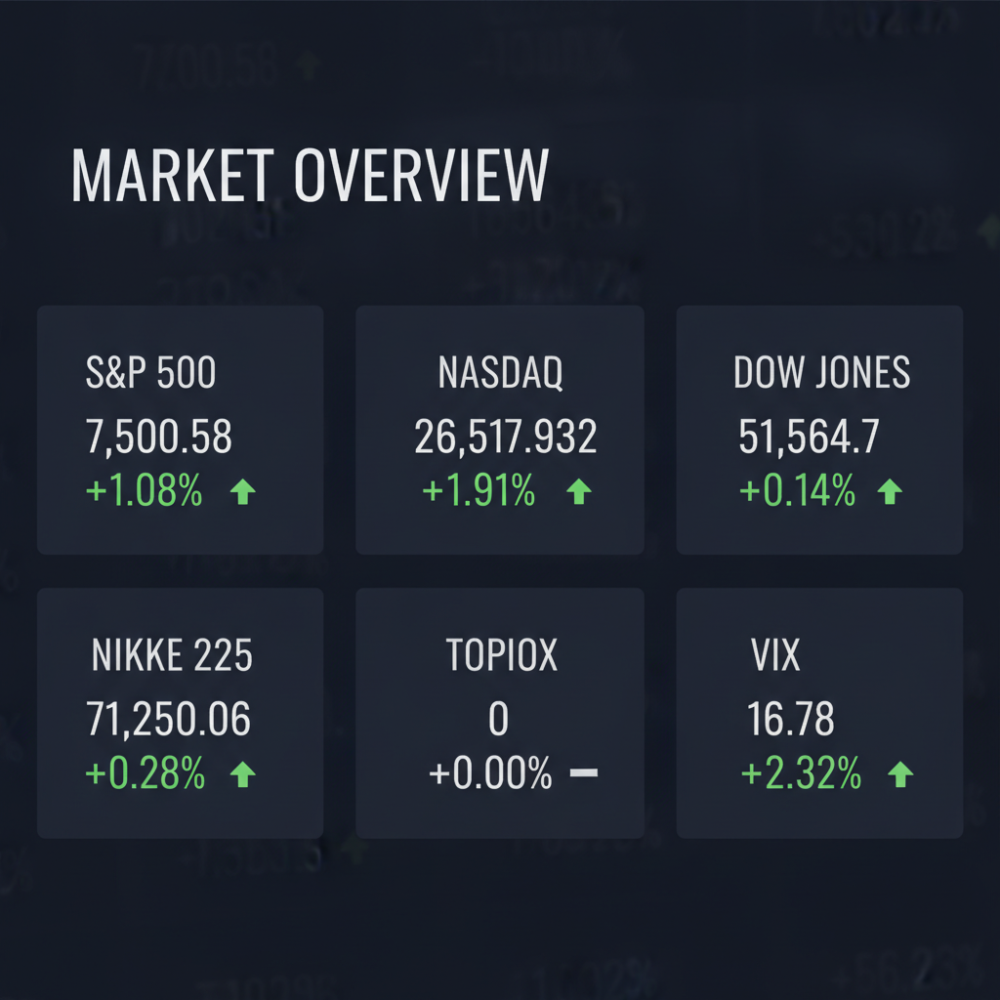

Daily Investment Report - 2026-06-21
Generated: 2026/6/21 7:36:27


投資チームの全合議の結果に基づき、以下の通り投資レポートをまとめました。
1. エグゼクティブサマリー
AI関連銘柄への資金集中により主要指数は高値圏で推移する一方、中東の地政学リスクと構造的な産業課題が市場の重石となっています。
過熱感のある相場状況を鑑み、個別銘柄は「実需と防衛」を軸に選別し、ポートフォリオ全体ではリスク管理を優先すべき局面です。
AI相場の恩恵を受ける「宇宙・防衛」等の成長セクターを注視しつつ、現金比率を高めて次の調整局面に備えることが肝要です。
2. 注目銘柄リスト
強気（買い推奨）
- MDA Space (MDA.TO) [平均スコア 9.0/10]: 宇宙空間でのエッジコンピューティングと防衛関連の受注残が豊富で、Blue Canyon Technologies買収により競争力が飛躍的に高まっています。
中立（様子見）
- AbbVie (ABBV) [平均スコア 5.0/10]: 新薬パイプラインは堅調ですが、大型買収に伴う負債増大リスクと薬価交渉の影響を注視する必要があります。
- Spirit Airlines (SAVE) [平均スコア 5.0/10]: 事業閉鎖により投資価値は失われています。銘柄分析対象としては既に機能しないため、保有している場合は直ちにポートフォリオから除外してください。
弱気（警戒）
- SoundHound AI (SOUN) [平均スコア 2.0/10]: 記録的な売上高を達成したものの、依然として赤字継続かつインサイダーの大量売却が相次いでおり、市場の評価がトップライン成長から収益性へシフトする中で調整リスクが高いです。
3. セクター推奨ランキング
1.
防衛・宇宙: 地政学リスクの構造化に伴い、国家予算投下が確約された「究極のディフェンシブ成長」セクターです。
2.
ヘルスケア: 景気変動の影響を受けにくく、活発なM&Aが株価の触媒となるため、不安定な相場での安定資産となります。
3.
産業インフラ・素材: AI需要の恩恵を受けつつ、物理的な実体を持つため、ソフトウェア銘柄よりもバリュエーションの正当性が高いです。
4.
航空・運輸: 構造的不況とコスト圧力が強いため、一部のプレミアム銘柄を除き投資は避けるべきです。
4. 今週の注目イベント
- 6月下旬（予定）: マイクロン・テクノロジー（MU）決算発表（半導体市場のセンチメントを決定付ける最重要イベント）
- 6月28日（予定）: 米国コアPCE価格指数（インフレ動向を左右し、金利政策への影響が大）
- 適宜: ホルムズ海峡周辺の地政学的緊張に関するニュース速報（原油供給への即時影響を監視）
5. リスク要因
- 中東情勢悪化に伴うホルムズ海峡封鎖の可能性（原油価格急騰とスタグフレーションの誘発）
- 日本銀行のタカ派転換による急速な円高進行（輸出関連株およびAI株の利益確定売りの加速）
- AI・半導体セクターへの資金集中による相関リスク（一銘柄の決算ミスが市場全体を押し下げる「ドミノ倒し」の危険性）
6. アクションアイテム
- ポートフォリオの「ストレス・テスト」を実施し、全銘柄が同時に20%下落しても耐えられるかを確認する。
- 利益の出ているAI・半導体関連株の一部を利益確定し、現金比率を10〜20%まで引き上げる。
- ポートフォリオの防御力を高めるため、金（ゴールド）関連資産や、高配当の生活必需品セクターへのシフトを検討する。
7. 米国株インデックス戦略
- 現在の市場環境の評価: 市場は正常性バイアスに支配されており、一部のテック株が指数を押し上げる「歪んだ上昇」です。現在フルインベストメントの状態であれば、一部を現金化し、調整局面での買い余力を確保すべきです。
- 今後1〜3ヶ月の見通し: 金利の高止まりとインフレ再燃リスクにより、ボラティリティが上昇する可能性が高いです。指数は横ばい、もしくは急激な押し目を作る展開を想定してください。
- 積立投資への影響: 感情的なタイミング調整は避け、淡々と継続してください。ただし、一括投資やスポット買いは現在は推奨されません。
- 注意すべきイベント: FOMCの議事要旨や雇用統計に加え、決算シーズンにおけるテック大手のガイダンスが指数全体の方向性を決めます。
- リスクシナリオ: 地政学リスクの顕在化により10%以上の急速な調整が発生する可能性があります。その際は、パニック売りをせず、過去の積立実績を信じて「定額積立」を継続することが最も堅実な対応です。
Agent Scoring Matrix（Web調査後の合議評価）
各エージェントがWeb調査結果を踏まえて独立に10段階評価した結果です。平均7以上=強気、4〜6.9=中立、4未満=弱気。
| 銘柄 |
ファンダメンタルズアナリスト | テンバガーハンター | マクロエコノミスト | リスクマネージャー |
平均 |
判定 |
| MDA Space |
9
宇宙防衛の成長性、M&A強化、受注残豊富 | 9
宇宙防衛の成長株、買収で競争力強化 | 9
宇宙防衛のリーダー、買収で成長加速、受注残厚い | 9
宇宙防衛の成長株、買収で競争力強化 |
9 |
強気 |
| AbbVie |
5 |
中立 |
| Spirit Airlines |
5 |
中立 |
| SOUN |
2
成長鈍化、インサイダー売却、高PER | 2
赤字継続、インサイダー売却、高バリュエーション | 2
赤字継続、インサイダー売却、バリュエーション過熱 | 2
赤字継続、インサイダー売却で警戒 |
2 |
弱気 |
Web Research Results (Google Search Grounding)
エージェントが推奨した中小型株について、Google検索で最新情報を調査した結果です。
SOUN
SoundHound AI (NASDAQ: SOUN)に関する投資判断に必要な最新情報を以下にまとめます。
1. 企業概要（事業内容、時価総額、業界でのポジション）
SoundHound AIは、会話型インテリジェンスの革新企業であり、独立した音声AIプラットフォームを提供しています。同社の音声AIは、多言語に対応した高速かつ高精度な応答を実現し、小売、金融、医療、自動車、スマートデバイス、レストランなどの分野で、「Smart Answering」、「Smart Ordering」、「Dynamic Drive-Thru」、「Amelia AI Agents」といった革新的なAI製品を通じて活用されています。
同社は2005年に設立され、2022年にNASDAQに上場しました。従業員数は約954名です。
時価総額は、2026年6月18日時点で約28.49億ドル、または約30.8億ドルと報告されています。
業界では、巨大テック企業のエコシステムに依存しない独立した音声AIソリューションの提供を使命としており、ボイスAIの「OS」を狙う先駆者として位置付けられています。
2. 直近の業績・決算情報（売上、利益、成長率）
SoundHound AIは、2026年第1四半期（5月7日発表）に過去最高の売上高4,420万ドルを記録し、前年同期比52%増となりました。この売上高は、アナリスト予想の4,256万ドルを上回りました。
1株当たり損失（EPS）は-0.06ドルで、予想の-0.10ドルよりも改善しました。
中核である自動車およびIoT AIセグメントの有機的成長率は約88%に達しています。
過去4年間で売上高は大幅に増加しており、2021年の2,100万ドルから2025年には1億6,900万ドルへと約8倍に拡大しました。
しかし、営業利益と純利益は減益が続いており、2026年3月期の営業利益は-150.77%、純利益は-154.26%となっています。 EPSも依然としてマイナスですが、2021年の-1.18ドルから2025年には-0.03ドルへと大幅に縮小しています。
売上総利益率は直近12ヶ月で40.6%でした。
3. 最新ニュース・材料（直近1-2週間の重要なニュース）
直近では、以下のニュースが報じられています。
* LivePerson買収とOASYSプラットフォームの発表: 2026年6月に、SoundHound AIがLivePersonを1億ドルで買収し、OASYSエージェントプラットフォームを発表したことが報じられました。OASYSは、自律的なエンタープライズワークフローに対する需要をターゲットとした新しいエージェント型プラットフォームであり、SoundHoundのバリューチェーンにおける位置付けを大幅に向上させる可能性があります。
* インサイダー取引: 2026年6月18日に、COOのマイケル・ザゴルセク氏、CTOのティモシー・ストーンホッカー氏、CSOのマジド・エマミ氏、CPOのジェームズ・ホム氏、CEOのキーバン・モハジャー氏がそれぞれ自社株を売却したことが報じられています。
* アナリストの見解: 一部のアナリストは、SoundHound AIの株価が急落した後も、記録的な収益と強力な有機的成長、主要なエンタープライズ関連の好材料があるにもかかわらず、市場がトップライン成長だけでは評価しない段階に入ったと指摘しています。
4. アナリスト評価・目標株価（あれば）
複数のアナリストがSoundHound AIの株価を評価しており、概ね強気の見方が示されています。
* コンセンサス評価: 10人のアナリストの評価に基づくと、「Moderate Buy（中程度の買い）」または「強気買い」がコンセンサスとなっています。具体的には、買いが77.8%、ホールドが22.2%です。
* 平均目標株価: アナリストの平均目標株価は、12.89ドルから14.93ドルの範囲で、現在の株価から大幅な上昇余地を示唆しています。
* 最高値はHC Wainwright & Co.による20ドル（2026年3月2日）。
* 最低値はBarclaysによる7ドル（2024年11月13日）。
* Northland Capital Marketsは2026年5月9日に目標株価を14ドルから12ドルに引き下げましたが、評価はOutperformを維持しています。
5. リスク要因（競合、規制、財務上の懸念）
*
競合: 会話型AI市場は競争が激しく、Google、Amazon、Appleなどの巨大テック企業が強力な競合として存在します。
*
財務上の懸念:
*
継続的な赤字とキャッシュバーン: 売上高は急速に伸びているものの、依然として赤字であり、営業損失とキャッシュバーンが継続しています。 2025年末までの調整後EBITDA黒字化を目標としていますが、今後の動向が注目されます。
*
利益率の圧迫: 買収した低利益率事業の統合により、GAAPベースの粗利益率は低下傾向にあります。非GAAPベースの利益率が低下し続ける場合、長期的な収益潜在力も縮小する可能性があります。
*
希薄化リスク: 買収などによる事業拡大に伴い、株式の希薄化リスクも指摘されています。
*
高いバリュエーション: 株価売上高倍率（P/S）が40倍を超える水準にあり、将来への過大な期待が織り込まれているとの見方もあります。
*
インサイダー売却: 複数の役員による株式売却が最近報告されており、市場のセンチメントに影響を与える可能性があります。
6. 株価の最近の動き（直近のトレンド）
SoundHound AIの株価は、2026年6月19日時点で約7.12ドルです。
2026年に入ってから年初来の株価は約35%下落しています。
52週間の価格変動幅は5.83ドルから22.17ドルです。 現在の株価は52週高値から大きく下落した水準にあります。
直近の第1四半期決算発表後、記録的な売上高を報告したにもかかわらず株価は急落しました。これは、市場がトップラインの成長だけでなく、より良い実行力を求め始めたことを示唆している可能性があります。
オプション市場では投資家の見方が分かれています。
MDA Space
MDA Spaceに関する投資判断に必要な最新情報を以下の通りまとめました。
1. 企業概要（事業内容、時価総額、業界でのポジション）
MDA Space Ltd.は、カナダに拠点を置く宇宙産業向けの先進技術およびサービスを提供する企業です。ロボティクス、衛星システム、地理情報解析を専門とし、国際的な宇宙ミッションのパートナーでもあります。象徴的なCanadarm技術の開発者としても知られています。同社は通信衛星、地球および宇宙観測、宇宙探査、インフラ分野に従事しており、政府、宇宙機関、商業宇宙企業、防衛・航空宇宙分野の主要請負業者などと協力関係を築いています。
2026年6月時点での時価総額は約54.6億米ドル（約8,200億円）です。
2. 直近の業績・決算情報（売上、利益、成長率）
MDA Spaceは、2026年5月7日に2026年第1四半期決算を発表しました。
*
売上高: 4億6,400万ドルで、前年同期比32%増となりました。
*
調整後EBITDA: 9,100万ドルで、前年同期比32%増となりました。
*
調整後EBITDAマージン: 19.5%でした。
*
調整後純利益: 5,100万ドルで、前年同期比32%増となりました。
*
受注残: 四半期末時点で37億ドルであり、2026年以降の収益の可視性を提供しています。
同社は2026年通期の財務見通しを再確認しています。
2025年12月期（通期）の売上高は16億3,320万ドル、営業利益は1億5,780万ドルでした。
3. 最新ニュース・材料（直近1-2週間の重要なニュース）
*
2026年6月19日: 米国のBlue Canyon Technologies LLCを約6億2,000万ドルで買収する最終合意を発表しました。Blue Canyon Technologiesは、RTXのRaytheonビジネスの一部であり、宇宙船および衛星部品メーカー、ミッションサービスプロバイダーです。
*
2026年6月12日: 完全子会社である49Northが、カナダの遠隔操縦航空機システム（RPAS）プログラム向けに連合共有データベースを開発・統合・試験するため、ジェネラル・アトミクス・エアロノーティカル・システムズ社（GA-ASI）から370万カナダドルの契約を獲得しました。
*
2026年6月12日: 49Northが、最新規制に準拠するよう刷新された計器飛行方式設計ソリューション「グローバル・プロシージャ・デザイナー」をリリースしました。
*
2026年6月2日: BAE Systemsにより、米国宇宙システムコマンドのMEO Epoch 2コンステレーション向けに選定されました。
*
直近の株価動向: SpaceXのIPOへの期待感から、宇宙関連企業の株価が一時的に上昇する動きも見られました。
4. アナリスト評価・目標株価（あれば）
複数のアナリストがMDA Spaceを評価しています。
*
コンセンサス評価: 「アウトパフォーム」または「ストロングバイ」です。
*
コンセンサス目標株価:
* 3人のアナリストの評価に基づくと、平均目標株価は47.33米ドルです。最高目標株価は58.00米ドル（RBC Capital、2026年5月11日）、最低目標株価は41.00米ドル（Jefferies、2026年4月6日）です。
* S&P Globalが調査した3人のアナリストによると、平均目標株価は44.07米ドルで、現在の株価より11.85%高いと予測されています。最低は39.17米ドル、最高は58.00米ドルです。
* 別の情報源では、アナリストのコンセンサス目標株価は60.92カナダドルであり、直近終値の55.61カナダドルを9.55%上回るとされています。
* Zacks Investment Researchのデータによると、平均目標株価は44.80米ドルで、最低33.00米ドルから最高53.29米ドルの範囲です。これは直近終値39.40米ドルから13.71%の上昇を示唆しています。
*
カナコード・ジェニュイティ: MDAスペースのレーティングを「強気」に据え置き、目標株価を39.59ドルから45.95ドルに引き上げました。
5. リスク要因（競合、規制、財務上の懸念）
*
競合: 宇宙産業は急速に拡大しており、多数の企業が参入しています。SpaceXなどの主要企業との競争は激しいと考えられます。
*
規制: 宇宙ビジネスは国際法や宇宙条約、各国独自の規制に影響を受けます。これらの規制は複雑であり、技術的リスクと同様に、宇宙ビジネスにおける重要な課題の一つです。特に宇宙資源の利用など新しい活動については、まだ法規制が整備されていない状況です。
*
技術的リスク: 宇宙空間特有の過酷な環境（放射線、極端な温度、高真空、微小重力）は、人工衛星の故障などを引き起こす可能性があります。また、軌道上の人工衛星の現状把握や保守には限界があります。
*
地政学的リスク: 宇宙開発に関する国際的な競争の激化に伴い、宇宙資源の利用や軍事利用に関する地政学上の緊張が高まる可能性があります。経済や政治の変動も宇宙分野に影響を及ぼすことがあります。
*
財務上の懸念: 現在のところ、直近の決算では収益と利益の堅調な成長が示されていますが、大規模な買収（例：Blue Canyon Technologies）は財務健全性に影響を与える可能性があります。
6. 株価の最近の動き（直近のトレンド）
MDA Spaceの株価は、2026年6月19日時点で59.11カナダドル（TSX）または55.61カナダドル（TSX）で取引されており、前日比で上昇しています。 52週間の株価レンジは20.85カナダドルから67.90カナダドルです。
2026年6月18日終値は39.40米ドルでした。
2026年6月19日のRTX CorpによるBlue Canyon Technologies売却のニュースでは、RTXの株価は下落しましたが、MDA Spaceの株価への直接的な影響は明示されていません。
直近の動向としては、SpaceXのIPOへの期待感から宇宙関連株が一時的に上昇する動きが見られましたが、その後吐き出す形で下落したという報告もあります。
2026年6月19日時点の株価は55.61カナダドルで、200日移動平均線を47.99%上回っています。
AbbVie
AbbVieに関する最新の投資判断に必要な情報を以下にまとめます。
AbbVie (ABBV) 投資判断に必要な最新情報
1. 企業概要
AbbVieは、米国イリノイ州ノース・シカゴに本社を置く、グローバルな研究開発型のバイオ医薬品企業です。 免疫疾患、精神・神経疾患、がん、アイケア、美容医療（アラガン・エステティックスポートフォリオ）などの主要領域に注力し、革新的な医薬品とソリューションを提供しています。 2026年6月18日時点の時価総額は約3,824.9億ドルです。 売上高ベースではバイオメディカル企業の中で6位、フォーチュン500では77位、フォーブス・グローバル2000では108位にランクインするなど、業界で上位のポジションを確立しています。
2. 直近の業績・決算情報
2026年4月29日に発表された2026年第1四半期（3月31日終了）決算は好調でした。調整後1株当たり利益（EPS）は2.65ドルとなり、市場予想の2.59ドルを上回りました。 売上高は前年同期比12.4%増（営業ベース10.3%増）の150.2億ドルで、市場予想を3億ドル上回っています。
主要な事業領域別の売上高は以下の通りです。
* 免疫疾患領域: 72.9億ドル（報告ベース16.4%増、営業ベース14.3%増）。主力製品はスキリージ（44.83億ドル）、リンヴォック（21.19億ドル）、ヒュミラ（6.88億ドル）です。
* 精神・神経疾患領域: 28.75億ドル（報告ベース26.0%増、営業ベース24.3%増）。
* がん領域: 16.31億ドル（報告ベース0.2%減、営業ベース3.0%減）。ベネクレクスタ（7.7億ドル）、イムブルビカ（5.56億ドル）などが含まれます。
* 美容医療領域: 11.86億ドル（報告ベース7.6%増、営業ベース5.1%増）。
GAAPベースの希薄化後EPSは0.39ドル（45.8%減）でしたが、調整後希薄化後EPSは7.7%増の2.65ドルでした。
3. 最新ニュース・材料（直近1-2週間）
* 2026年6月18日：四半期現金配当として1株あたり1.73ドルを発表しました。
* 2026年6月16日：アラガン・エステティックス部門の製品「SKINVIVE by JUVÉDERM®」が、21歳以上の成人の首のしわ（「テックネック」による横じわを含む）の改善を目的として米国食品医薬品局（FDA）の承認を取得しました。
* 2026年6月12日：欧州血液学会（EHA）2026会議にて、慢性リンパ性白血病（CLL）のファーストライン治療薬VENCLEXTA®/VENCLYXTO®（ベネトクラクス）に関する9年間の長期治療転帰を示す新たな第3相データを発表しました。
* 2026年6月12日：グレカプレビル水和物／ピブレンタスビルについて、急性C型肝炎ウイルス感染患者に対する治療薬として欧州医薬品委員会（CHMP）から肯定的見解を得ました。
* 2026年6月12日：日本において、高安動脈炎に対するウパダシチニブの適応追加承認、および中等症から重症の活動性クローン病成人患者に対するリサンキズマブの皮下投与による導入療法に関する承認事項一部変更承認をそれぞれ申請しました。
4. アナリスト評価・目標株価
アナリストはAbbVie株に対し総じて強気な評価を示しています。複数のアナリストが「買い」または「強気買い」を推奨しています。 2026年6月12日時点の平均目標株価は253.55ドルで、現在の株価から約12.8%の上昇余地があると予想されています。 他の情報源では、18人のアナリストによるコンセンサス価格予測が256.44ドル、7人のアナリストによる平均目標株価は258.00ドル（レンジは184.00ドル〜328.00ドル）と報告されています。 グッゲンハイムは2026年4月10日に目標株価を249ドルに引き上げ、「買い」推奨を維持しています。
5. リスク要因
主要なリスク要因としては、かつての主力製品であったヒュミラ（Humira）の特許切れによる売上減少が挙げられます。しかし、後継薬であるスキリージやリンヴォックが順調に売上を伸ばしており、ヒュミラの減収分を十分に補い、成長を牽引しているとの評価が得られています。 また、特に米国における薬価交渉制度の導入は、アッヴィの売上構成比において米国が高い割合を占めるため、同業他社と比較して影響を受けやすい可能性があります。 その他、研究開発プロセスの困難、敵対的訴訟、政府による介入、業界関連の法律や規制の変更などが潜在的なリスクとして存在します。 財務面では、自己資本比率の低下傾向が見られ、M&A対応の巨額起債により有利子負債が一時的に増大する可能性も指摘されています。
6. 株価の最近の動き
AbbVieの株価は、2026年6月18日時点の終値で216.49ドルでした。 直近1年間では16.86%上昇しています。 52週高値は2025年10月1日の244.81ドル、52週安値は2025年6月27日の181.73ドルです。 2026年第1四半期の好決算発表直後には、株価が一時的に下落する場面も見られましたが、2023年にヒュミラの特許切れ懸念で低迷した株価は、2024年以降の新薬売上の好調により投資家心理が改善し、回復基調にあります。 現在の株価は「割高」と評価する意見もありますが、これは今後の株価下落を必ずしも示すものではありません。
Spirit Airlines
Spirit Airlinesは、2026年5月2日に全便の運航を停止し、事業を閉鎖しました。これにより、投資判断を行う上での状況は大きく変化しています。以下に、ご依頼の観点に基づき、最新情報を簡潔にまとめます。
Spirit Airlinesに関する最新情報
重要事項: Spirit Airlinesは、2026年5月2日に全便の運航を停止し、事業を閉鎖しました。したがって、通常の意味での投資対象とはなりません。
1. 企業概要
* 事業内容: かつては米国、ラテンアメリカ、カリブ海地域の15カ国、約93の目的地にサービスを提供する超低コスト航空会社（ULCC）として運航していました。航空券の価格に含まれるコンポーネントを取り除き、手頃な旅行を提供することをビジネスモデルとしていました。
* 時価総額: 2026年6月時点での時価総額は5092万ドルでした。
* 業界でのポジション: 事業停止前の2023年時点では、北米で7番目に大きな旅客航空会社であり、同地域最大の超低コスト航空会社でした。
2. 直近の業績・決算情報
* 事業停止のため、直近の業績や成長率は現在の投資判断の材料として意味をなしません。
* 2023年12月期（連結）の売上高は5,362,549千ドル、営業利益は-480,346千ドル、当期利益は-475,302千ドルの赤字を計上していました。
* 2022年には3億9000万ドル、2023年には4億7500万ドルの純損失を計上しており、2024年半ば時点では長期負債が33億ドルを超えていました。
3. 最新ニュース・材料
* 2026年5月2日: スピリット航空は、ジェット燃料価格の急騰による財務状況の悪化を理由に、全便の運航停止と事業閉鎖を正式に発表しました。米国政府からの最大5億ドルの緊急支援確保にも失敗しました。
* 背景: 経営悪化の背景には、パンデミック後の需要構造変化、競争激化、コスト上昇圧力など、ULCCモデルでは対応しきれない市場環境の構造変化がありました。
* 合併の失敗: 2022年にジェットブルー航空との合併を発表しましたが、連邦地裁が競争上の理由から反対し、2024年3月に合併計画は破棄されました。これにより、経営再建の重要な選択肢を失いました。
* 破産申請: 2024年11月に連邦破産法第11章の適用を申請し、2025年3月に一度は脱却しましたが、2025年8月に再度申請していました。
4. アナリスト評価・目標株価
* 事業が停止しているため、現在、有効なアナリスト評価や目標株価は存在しません。
* 事業停止前の2026年5月の報道では、スピリット航空の株価は「基本的に無価値である」とされていました。
* 2024年7月には、アナリストが投資判断を「売り」に引き下げ、目標株価も従来の3ドルから2ドルに引き下げていました。2026年夏まで営業黒字は見込めないとの見方が出ていました。
5. リスク要因
* 過去のリスク要因として、ジェット燃料価格の高騰が経営を直撃し、破綻の直接的な原因となりました。
* 競合他社との価格競争の激化も、同社の収益性を圧迫していました。
* ジェットブルー航空との合併が独占禁止法上の懸念から阻止され、経営再建の道が閉ざされたことも大きな要因です。
* 複数回にわたる連邦破産法第11章の適用申請が示すように、財務状況は極めて深刻でした。
6. 株価の最近の動き
* 事業停止に伴い、株価は大きく下落しました。2024年11月20日には最低値0.13ドルを記録しています。
* 2026年5月4日の報道では、運航停止のニュースを受けて株価が25%急落し、「基本的に無価値」と報じられました。
* 現在、OTC市場で取引されていますが、事業活動がないため、投資対象としては機能していません。
以上の情報から、Spirit Airlinesは既に事業を停止しており、投資判断の対象としては適切ではないと結論付けられます。